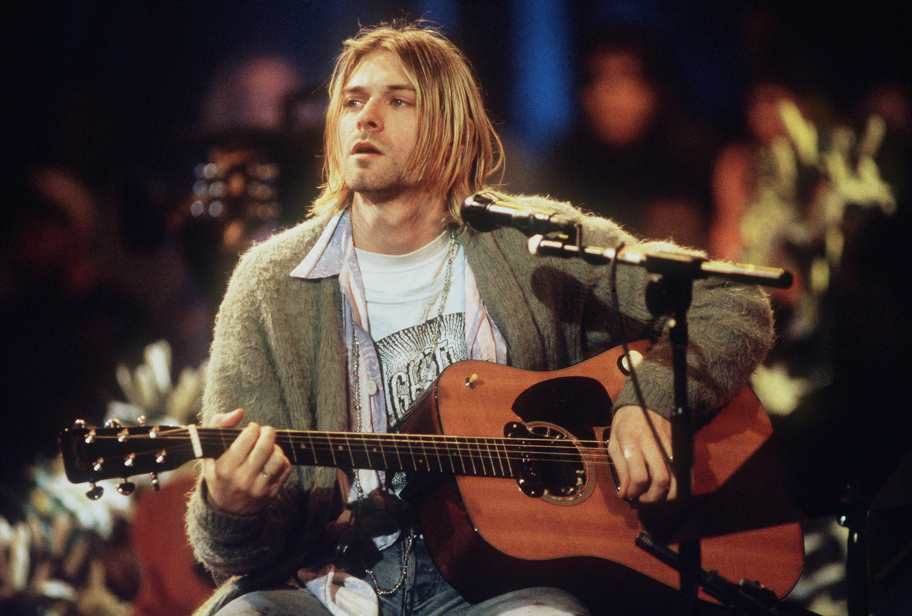

Kurt Cobain
Lead Singer of Nirvana

One of the greatest singers of all time.
Here is a timeline of Kurt Cobain's life and Nirvana
- 1967 - Kurt Cobain was born.
- 1976 - Cobain's parents had a divorce, which completely changed his personality, becoming more defiant and withdrawn.
- 1981 - Cobain receives his first guitar from his uncle. He learned Led Zeppelin's "Stairway to Heaven" and Queen's "Another One Bites the Dust".
- 1985 - Cobain formed Fecal Matter after he had dropped out of Aberdeen High School.
- 1987 - One of the most successful Grunge band, Nirvana, was formed.
- 1989 - Nirvana released its first album, Bleach, for the independent record label Sub Pop.
- 1989 - Nirvana collaborated with Screaming Trees to form a side project known as the Jury.
- 1991 - Nirvana found unexpected mainstream success with "Smells Like Teen Spirit", the first single from their landmark second album Nevermind.
- 1992 - Cobain collaborated with William S. Burroughs to produce the song "The "Priest" They Called Him".
- 1993 - Nirvana appeared on MTV Unplugged.
- 1994 - Nirvana released the acoustic version of the Unplugged set.
- 1994 - Cobain commits suicide and passes away.
"When you're in the public eye, you have no choice but to be raped over and over again - they'll take every ounce of blood out of you until you're exhausted. ... I'm looking forward to the future. It will only be another year and then everyone will forget about it." — Kurt Cobain on the overwhelming media attention after Nevermind, 1992.